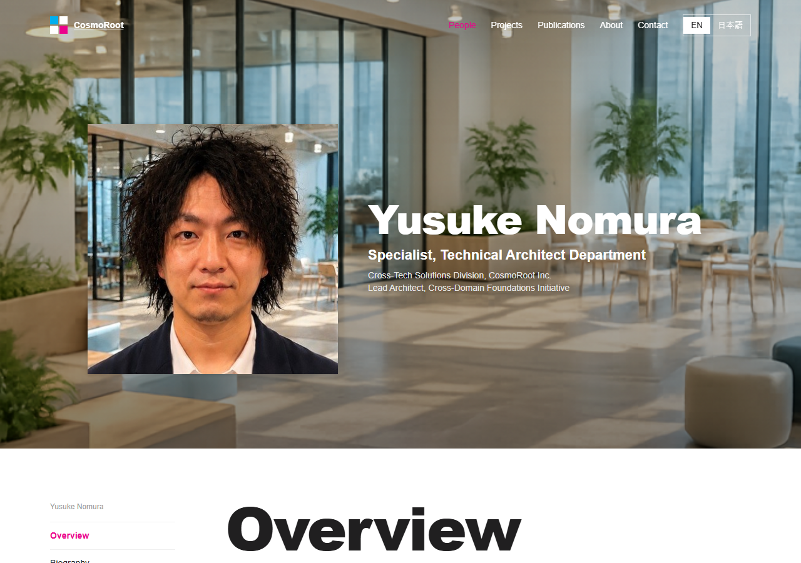
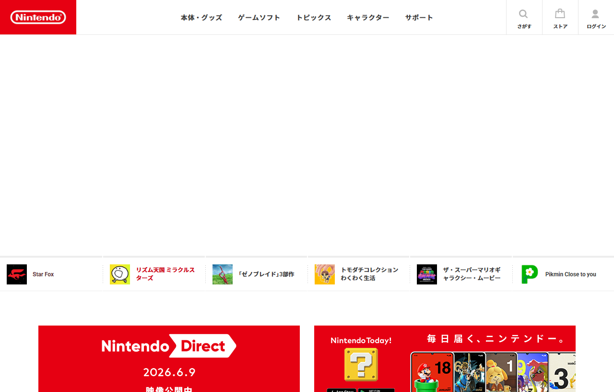
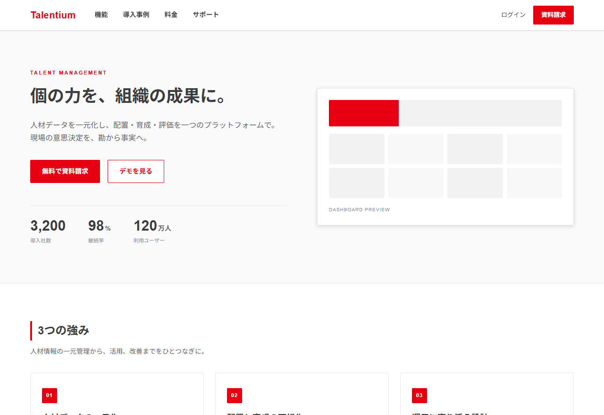

UOS『AI Lead-Off』セミナー
第1回 / 業務系編
Claudeで日々の
業務を変えよう
AIに書かせる、デザインさせる、自動化する。
Claudeで実務をどのように変えられるかをご紹介します。
2026.06 / 講師：野村祐介
自己紹介
講師の自己紹介
野村 祐介（のむら ゆうすけ）

経歴
株式会社コスモルート テクニカルアーキテクト部 スペシャリスト
2009年から30プロジェクト以上の業務システムに従事。
独自フレームワークや基板設計を多くやってきました。
2024年から積極的にAIを活用しています。
ClaudeやGeminiを設計、実装、テストなどに組み込んだり、社内のAI布教活動をしています。
左の自己紹介ページは
Claudeデザインを使って30分くらいで
作りました。
このサイト
のデザインを後述のスキルで再現しています。
本日のゴール
Claudeってなんなのか、どう使えばいいのか？がわかる状態にする。
01
Claudeの全体像
Claudeってなんなの？
優位性・種類・拡張方法など
02
ライティング
AIっぽい文章って？
AIっぽさを定義して、それを消すSkillの実演
03
デザイン
DESIGN.mdを軸に
モック・スライドを作る
04
業務自動化
社内で自動化した2事例の紹介
本日のセミナーはAIツールを使ったことがない方向けです。デモ中心に進めますが、本日使用したSkillはセミナーの最後に配布します。
アイスブレイク
最近わたしは、ほとんど自分の手でコードを書いていません。
Claudeに任せていること
コードを書かせる
書いたコードをレビューさせる
テストを書かせて回させる
自分が残った役割
何をやらせるかを決める
最終チェックで品質を担保する
ユーザーと向き合う
この流れが続けば、AIを使わない側のエンジニアは、AIが入れない一部の閉域環境を除いて居場所を失っていきます。
アイスブレイク — もう半分の話
でも、AIにいい成果物を出させるのは、人の指示と見極め。
渡し方
指示の質で決まる
いい成果物が出るかは、何をどう頼むかという人間側の指示次第
見極め
正しさを判断する
出てきたものが本当に正しいかを見極めるスキルは、これからも必要
だから
土台のある人が強い
スキルのある技術者がAIを使えるようになるのが一番強い
AIに置き換わるのではなく、AIをうまく動かせる人に仕事が寄っていきます。
Claudeについて 01 — 優位性
同じAI開発支援でも、Claudeを一番活かせるのは純正のClaude Code。
GitHub Copilot
Microsoft製アプリに組み込まれたAI
補完だけでなく、チャット・PRレビュー・CLI、Teams など Microsoft / GitHub の各所で使用できるが、性能はイマイチ
Cursor
モデルを選べるエディタ
AIコーディングエディタ。中で動かすモデルを切り替えられる（Claude や OpenAI 系など）。Claude は選択肢の一つ
Claude Code
Claude 純正のエージェント
Anthropic 製。Claude を最大限引き出し、仕事を渡すと手順を組んで最後まで進める
3つは役割が違います。
広く埋め込むCopilot、モデルを選べるCursorに対し、Claude CodeはClaude純正だから最新機能をそのまま使え、エージェントとして仕事を任せきれます。
Claudeについて 02 — 使える形
使う場所ややりたいことで、Claudeの形を選ぶ。
話す・相談する
Web
ブラウザ版。
チャット、アーティファクト、Claudeデザインが使える
デスクトップアプリ
Web版とほぼ同じ。加えてCoworkが使える
スマホアプリ
移動中でも音声で相談できる
その場で作る
アーティファクト
作ったコードや文書をその場でプレビュー・編集
Claudeデザイン
要件からUIや紹介ページをその場で生成
任せる・埋め込む
Cowork
デスクトップ版の作業モード。許可フォルダを直接読み書き＋/scheduleで定期実行
CLI（Claude Code）
ターミナルのエージェント。開発に組み込む
API
自社のアプリや仕組みに組み込む。従量課金に注意
どれも同じClaude。できることが少しずつ違うので用途で選択しましょう。
Claudeについて 03 — モデル
モデルは、仕事の難易度とトークン消費量で選ぶ。
Haiku
軽い作業を速く。消費が小さい
Sonnet
日常の主力
速さ・賢さ・消費のバランス
Opus
難所に。賢いが消費が大きい
軽い・速い・消費小
重い・賢い・消費大
消費が大きいほどコストや利用上限の減りも速い。難所だけOpus、普段はSonnetでOK。
Claudeについて 04 — 拡張機構
4つの仕組みで、Claudeを拡張する。
Claude
Code
Skills
決まった手順を呼び出す
Hooks
実行の前後を縛る
MCP
外部ツール・データにつなぐ
CLAUDE.md rules etc...
ルールと記憶の置き場所
何度もやる手順はSkillにすると便利です。
SkillはAIに作成させることができます。
プロジェクトのルールなどはCLAUDE.md、rulesに記載します。
ライティング編 — /rewrite-ai-tone のデモ
/rewrite-ai-tone
は、AIっぽさを消して人の文章にするスキル。
Before — AIが書いた下書き
本稿では、これから開催する「ClaudeCode Skillハンズオン」について、その目的と意義を以下で解説します。結論から言うと、本ハンズオンは参加者の生産性を飛躍的に向上させるための、極めて重要かつ効果的な取り組みです。
…非常に重要で大切、そして欠かせない機会です。要するに、AI時代を生き抜くための最適な第一歩です。皆様のご参加を心よりお待ちしております。
After — AIっぽさを消したもの
ClaudeCodeのSkillハンズオンを開催します。Skill機能を実際に触ってもらい、終わったあとそのまま自分の業務で使える状態になってもらうのが狙いです。
ClaudeCodeのSkillを体系立てて触れる機会は多くありません。AI時代の開発に一歩踏み出す場として使ってください。
記号・強調の盛りすぎ
太字や「」の乱用を削る
無難な前置きと締め文句
「結論から言うと」「お待ちしております」を落とす
抽象語の言い換え連打
重要・大切・最適・本質の重ねを止める
SkillからSkillを呼び出すことができるので、デザイン編の
/create-slides-html
でも使用しています。
デザイン編 — 全体像
DESIGN.mdでデザインを定義し、そのデザインの成果物を作成する。
/create-design-md
デザインの仕様書をつくる
既存サイトのURLや参照pptxから、配色・フォント・余白などを実測してDESIGN.mdに書き出す
/create-slides-html
DESIGN.mdからスライドをつくる
DESIGN.mdを読み込み、その配色・フォントでHTMLスライドに起こす。モックも同じDESIGN.mdから作れる
見本（サイト / pptx）
→ DESIGN.md（仕様書）→
スライド / モック
デザインの仕様書(DESIGN.md)が重要です。次のページではDESIGN.mdとは何かを説明します。
デザイン編 — DESIGN.mdとは
デザインの決まりを実測値で書き出した仕様書が、DESIGN.md。
任天堂のサイト（nintendo.com/jp）

このURLを
/create-design-md
に読ませると、DESIGN.mdが生成される。
さらにこれを元にモックを作成させると...
生成されたDESIGN.md（抜粋）
# Color Palette
Nintendo Red #e60012
Red Dark #ce181e
Ink Gray #3c3c3c
Panel Gray #f2f2f2
# Typography
本文・見出し Roboto / ヒラギノ角ゴ
本文の基準 12px
# Radius / Shadow
角丸 2px（円形50%はアバター）
影 ほぼ無し（フラット）
色・フォント・角丸・影が、推測ではなく実測値で並ぶ
デザイン編 — 出力例（モック）
任天堂のサイト風の、架空のサービスのLPができあがる。
架空の人材管理SaaSのLP

DESIGN.mdの値がそのまま効く
ブランド赤
#e60012
をロゴとCTAに
ニュートラルなグレー基調で階層をつくる
角丸はほぼなし・影なしのフラット
中身は人材管理SaaSでも、見た目は nintendo.com/jp 由来のテイストで揃う
デザイン編 — なぜ仕様書を挟むか
同じDESIGN.mdを当てると、モックもスライドも見た目がそろう。
DESIGN.md
1つの仕様書
モック（HTML/CSS）
同じ色・フォントで再現
スライド（reveal.js）
同じ色・フォントで再現
DESIGN.mdを挟むだけで、毎回デザインを言葉で指示し直さずに済みます。
抽出したテイストを、モックにもスライドにも使い回して再現できます。
このスライドも
/create-slides-html
で生成されています。
業務自動化編 — 事例 01
AIニュースの収集、投稿を毎週自動で。
Claude Code ｜ 毎週月曜10時に自動起動
Power Automate
① 収集
XからAIニュースを集める
② 出力
Markdown と HTML の
2ファイルを書き出す
Markdown → Obsidian
ナレッジとして蓄積
③ Teamsに投稿
OneDriveに置かれたHTMLを投稿
HTML
Markdown
収集とファイル出力はClaude、Teams投稿はPower Automateが担当します。
ClaudeのTeams連携は限定的なので、別ツールと組み合わせる必要があります。
業務自動化編 — 事例 02
請求書を読み取り、申請用Excelに転記。
Claude
人（最終チェック）
① 抽出・DL
Claude in Chrome で
請求書PDFをダウンロード
② 換算
JCBのレートで円換算
レート画面をスクリーンショット
③ 追記
自社の申請用Excelに
書き込む
④ チェック
金額を人が最終確認
証跡として保存
請求書PDF ＋ レートのスクリーンショットを
Excel と同じフォルダのサブフォルダへ
PDF
スクリーンショット
請求書PDFとレートのスクリーンショットは証跡としてサブフォルダに残すので、あとから根拠を確認できます。
クロージング
今日紹介したSkillの一部は
この後配布します。
自分のPCで使ってみてください。
何か質問等あればお願いします。
次回は第2回：コーディング編を予定しています
配布資料に関するご注意
本資料は、UOSが開催するセミナー参加者に
限り配布するものです。
以下の行為を禁止します。
社外への持ち出し・共有・送付（印刷物・電子データを問わず）
無断での転載・複製・再配布
内容の改変および二次的著作物の作成
本資料の著作権は株式会社コスモルートに帰属します。
不明点は〔担当部門・連絡先〕までお問い合わせください。